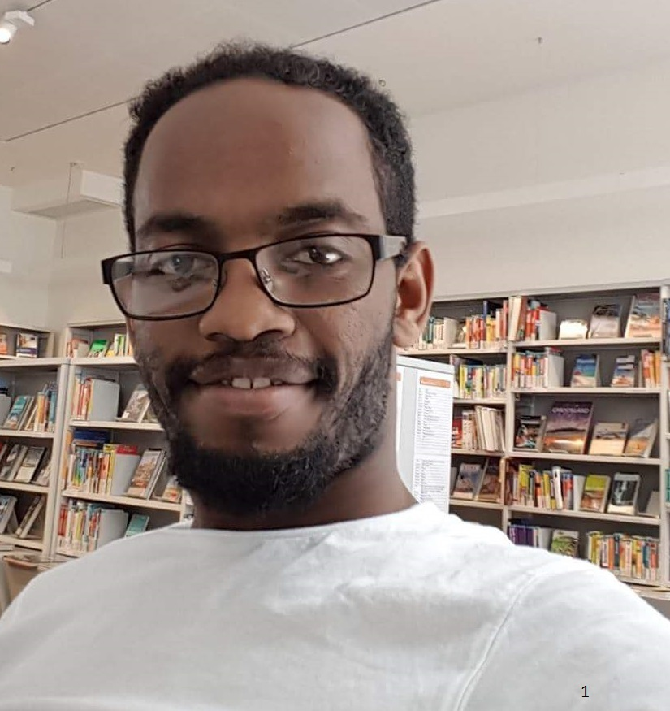

Lyejoe Portfolio project
 This is our official page for the school project in powercoders. We are learning HTML coding at powercoderspowercoders school in Zurich, Hardbrücke. The school started on Monday September 25, 2017 and finished on Friday December 24, 2017. The school program will also have three or six months internship program
My name is Yoseph Endrias Lechebo, I like to be called Jo, I born in Addis Ababa Ethiopia, since June 2015 I live in Switzerland, I am study computer field I live here as a refugee, I am using my time to study online, and coding school at powercoders. I worked as an IT help desk in Ethiopia before I came here. I have got the opportunity to study programming course here in Zurich, Switzerland, I started last month. This will give me a chance to continue in this profession.I lived with lots of obstacles. I am struggling to finish the course with a very good motivation, it is a great opportunity for me to have a course while I have no other things to do, I am hoping that I will finish it with a good grade.